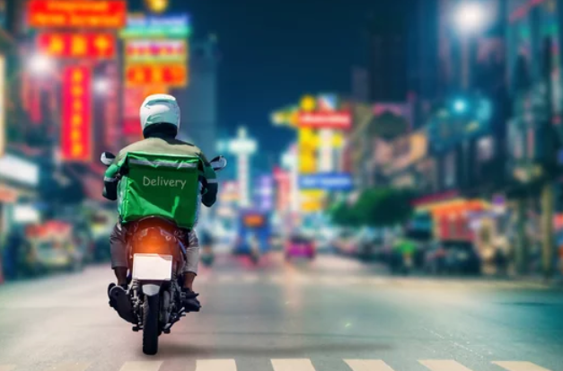
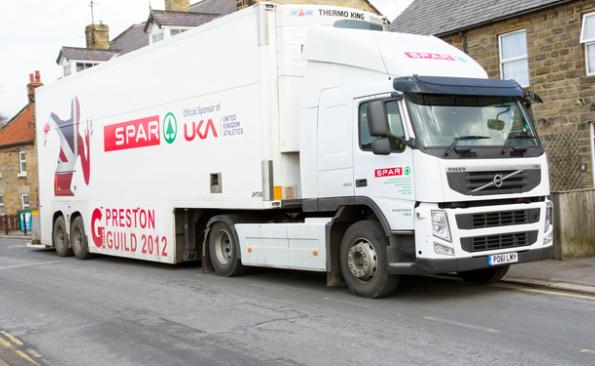

Food Delivery
Food delivery is a courier service in which restaurants, grocery stores, or independent companies deliver food directly to customers.Food delivery is a courier service in which a restaurant, store, or independent food-delivery company delivers food to a customer. An order is typically made either by telephone, through the supplier's website or mobile app, or through a third party food ordering service. The delivered items can include entrees, sides, drinks, desserts, or grocery items and are typically delivered in boxes or bags. The delivery person will normally drive a car, but in bigger cities where homes and restaurants are closer together, they may use bikes or motorized scooters. Due to shifting habits in response to lockdowns and restrictions from the COVID-19 pandemic, online food delivery through third-party companies has become a growing industry and caused a "delivery revolution."[1] Nascent technologies, such as autonomous vehicles have also been used to complete deliveries. Customers can, depending on the delivery company, choose to pay online or in person, with cash or card. A flat rate delivery fee is often charged with what the customer has bought. Sometimes no delivery fees are charged depending upon the situation.[2] Tips are sometimes customary for food delivery service. Contactless delivery may also be an option.[3] Other aspects of food delivery include catering and wholesale food service deliveries to restaurants, cafeterias, health care facilities, and caterers by foodservice distributors.

History
The first food delivery service was for naengmyeon (cold noodle) in Korea, recorded in 1768. Haejang-guk (hangover soup) was also delivered for the yangban in the 1800s. Advertisement for food delivery and catering also appeared in the newspaper in 1906. The Muffin Man is a nursery rhyme first recorded in 1820. Victorian households often had fresh food delivered, with the door-to-door vendor of English muffins known as the muffin man. In 1962, an Edinburgh fish and chip shop started delivering fish suppers, chicken and hamburgers by car within the Edinburgh metropolitan area. The food was delivered in a stainless steel insulated pot to keep it warm.
Types
Meal Delivery
A meal delivery service sends customers fresh or frozen prepared meals delivered to their home or office, perhaps in the form of cooked, individually pre-portioned meals. Meals may come in small tupperware containers and are often labeled with nutritional information. Some providers offer many options for specific diet types like vegetarian and vegan. These services often operate on a subscription business model rather than by individual order as in pizza delivery or with the broader category of online food ordering. An alternative type of meal delivery service is a meal kit, which distributes ingredients and recipes that customers prepare themselves. Meal delivery orders are typically on demand, intended to be eaten right away, and include hot, already-prepared food. While some service providers offer subscription services, ordering for delivery usually involves contacting a local restaurant or chain by telephone or online. Online ordering is available in many countries, where some stores offer online menus and ordering. Since 1995, companies such as Waiter.com have their own interfaces where customers order food from nearby restaurants that have partnered with the service. Meal delivery requires special technology and care, since the food items are already cooked and prepared, and can be easily damaged if dropped, tilted, or left out for long periods of time. Hotbags are often used to keep food warm. They are thermal bags, typically made of vinyl, nylon, or Cordura, that passively retain heat. In Mumbai, dabbawalas deliver hundreds of thousands of lunches (tiffin) to paying subscribers every workday through a system of rail and bicycle links. The lunches are sent in tiffin carriers, and are prepared in the late morning by either a restaurant or family member (typically a wife for a working husband, since many families still follow traditional asymmetrical gender roles). The tiffins are then returned either in the afternoon or the next day by the same system. In the Philippines, most commonly delivered meals are from fast food chains like Jollibee, McDonald's, Pizza Hut, Shakey's, KFC, etc. Orders are placed through their delivery websites, mobile apps, or by phone. Time of delivery usually takes around 30 to 45 minutes. In China, consumers mainly place food delivery orders via smartphone apps, with the number of users approaching 500 million people as of 2020.The transaction scale of China's food delivery market is expected to eventually surpass US $129.17 billion, an increase of 14.8% year-on-year
Grocery Delivery
Grocery delivery companies will deliver groceries, pre-prep or pre-made meals, and more to customers.
The companies work with brick and mortar stores or their own line of grocery items. These orders
are typically larger and more expensive than normal meal deliveries, and are often not meant to be eaten right away,
rather they are to replace items someone has run out of, like flour or milk. They are almost always done online, and typically
take at least one day to deliver, though some companies offer same-day delivery. Many delivery services are required to offer
delivery within two hours because frozen and fresh foods must be delivered before they spoil.

Associated Fees
In addition to paying for the food, customers will often have to pay a delivery fee.
The delivery fee will cover the cost of gas or other transportation costs, but
usually does not go to the delivery person. For meal delivery, it is common to
give the deliverer an optional tip upon paying for the order.[citation needed] In Canada
and the United States, tipping for delivery is customary. Opinions on appropriate
amounts vary widely.In addition, grocery stores may charge more for the foods that
are ordered online for delivery than they charge for the same items off-the-shelf.
In restaurant delivery, if the delivery service is provided by a third party, such as Uber Eats or Deliveroo,
the delivery fee, which can be as much as 25 or 30 percent of the value of the order, is paid by the restaurant
to the service provider. In addition to the delivery fees, the service companies charge the restaurants a fee to set
up the account, further cutting into the restaurants' margins. Due to intense competition between the service
providers wishing to sign up restaurants to use their services, restaurants have been able to negotiate lower delivery fees.
McDonald's negotiated the delivery fees charged by Uber Eats from nearly 20 percent to "around 15 percent," according
to a report in The Wall Street Journal
Technology
As the number of restaurant food delivery systems has increased, so have the logistical challenges of tracking online orders; restaurants using delivery services usually must have each service's tablet or iPad to receive orders, which then must be transferred into the restaurant's own point-of-sales system.[39] To streamline this, software-as-a-service (SaaS) companies have emerged to integrate the online ordering, billing and dispatching of restaurant food orders. These modern platforms use a fleet management system designed for the challenges of on-demand delivery. The process typically works as follows: Order and dispatch: When a customer places an order, the platform's central system automatically dispatches it to the nearest available courier. Route optimization: The system's journey planner algorithm calculates the most efficient route for the courier, often bundling multiple orders to improve delivery times. Real-time tracking: The platform uses a vehicle tracking system (typically the courier's smartphone) to monitor the courier's location. This allows the customer to track and trace their order in real-time on a map and receive an accurate ETA. Data analysis: The platform collects a vast amount of telemetry data on delivery times and courier efficiency to continuously refine the logistics model and evolve from simple tracking to business intelligence. The use of telematics solutions in this sector is recognized for its ability to significantly improve operational performance. The application created for food delivery have positive influences on the performance and profits of the restaurant and can help to save money and time for both restaurant and customers.[45] Moreover, the COVID-19 pandemic significantly accelerated the growth of the industry, with the number of users approaching one billion people by 2024.